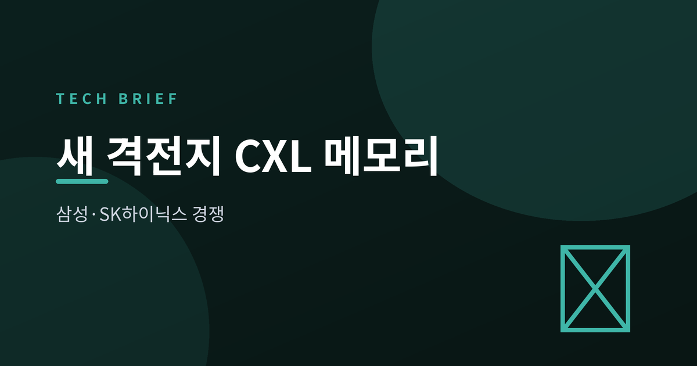
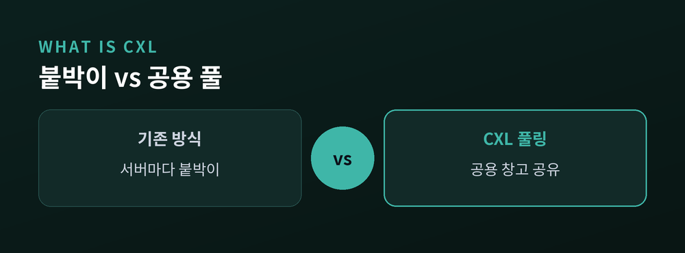
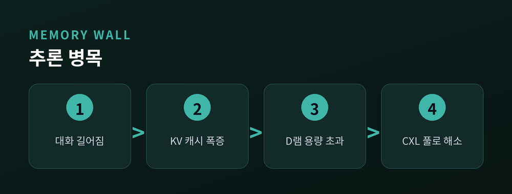
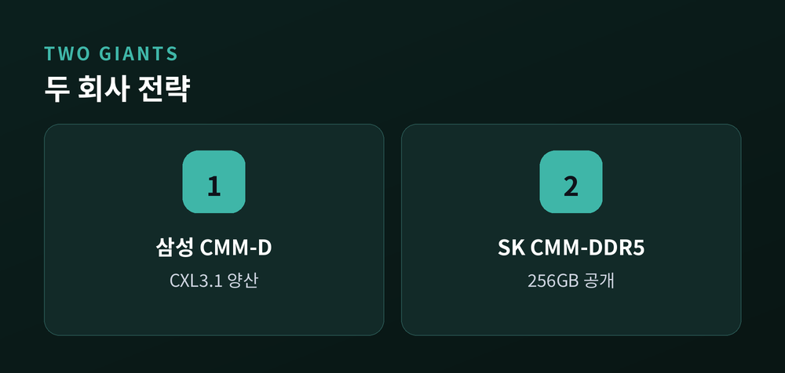
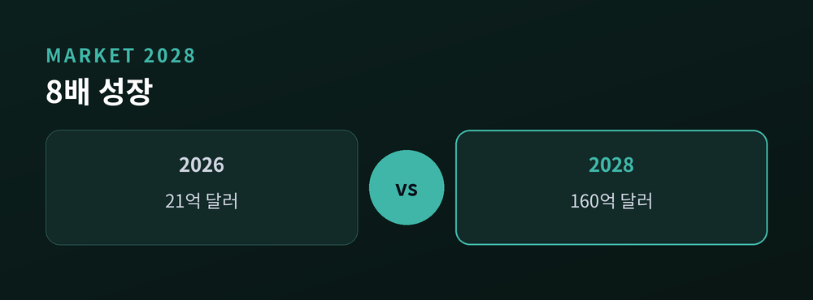

삼성·SK하이닉스 메모리 주도권 경쟁
이번 글에서는 반도체 업계의 새 화두로 떠오른 CXL 메모리를 정리해 보겠습니다.
HBM의 뒤를 잇는 격전지로 불리는 기술입니다.
어려운 용어는 최대한 쉽게 풀어 전하겠습니다.

CXL은 '컴퓨트 익스프레스 링크'의 줄임말입니다.
CPU와 GPU, 메모리를 한 공간처럼 이어주는 연결 규격입니다.
예전에는 서버 한 대마다 메모리를 붙박이로 달았습니다.
지금은 CXL로 여러 서버가 커다란 메모리 창고를 나눠 쓸 수 있습니다.
이 기술의 힘은 두 가지입니다.
용량을 크게 늘리는 '확장', 그리고 여러 대가 함께 쓰는 '풀링'입니다.

이유는 AI 추론의 확산에 있습니다.
챗봇이 긴 대화를 기억하려면 'KV 캐시'라는 임시 메모리가 계속 불어납니다.
삼성전자의 실험이 이 지점을 잘 보여줍니다.
512GB D램 구성에서는 캐시가 용량을 넘어서자 성능이 흔들렸습니다.
반면 1TB CXL 메모리 풀은 안정적으로 버텼습니다.
여러 GPU를 묶은 환경에서도 D램의 92% 수준 성능을 지켰다고 합니다.
메모리 병목을 CXL로 넘어서려는 시도인 셈입니다.

삼성전자는 스스로를 CXL 시장의 선구자로 내세웁니다.
지난해 12월 CMM-D 양산을 공식화했고, 상위 규격인 CXL 3.1 제품의 연내 양산을 준비 중입니다.
SK하이닉스는 '풀스택 AI 메모리 기업'을 표방합니다.
지난달 행사에서 256GB CMM-DDR5를 공개하며 한 세대 만에 용량을 두 배로 키웠습니다.
연산 기능을 메모리에 넣은 제품은 이미 통신사 AI 클라우드에 적용됐습니다.
다만 CXL이 HBM을 대체하는 것은 아닙니다.
HBM은 빠른 핵심 연산을, CXL은 넉넉한 용량을 맡는 상호 보완 관계입니다.

시장조사기관 욜은 CXL 시장을 올해 약 21억 달러로 봅니다.
2028년에는 약 160억 달러까지, 여덟 배 가까이 커질 것으로 전망합니다.

물론 장밋빛만은 아닙니다.
CPU와 서버 플랫폼의 표준 지원, 소프트웨어 생태계 성숙이 함께 따라와야 합니다.
대중화 시점을 두고 2026년 본격화와 2028년 주류화로 전망이 엇갈리기도 합니다.
정리하면 이렇습니다.
CXL은 아직 HBM만큼 무르익지는 않았습니다.
그러나 AI가 '학습'에서 '추론'으로 무게중심을 옮기는 지금, 메모리의 다음 승부처로 떠오른 것은 분명합니다.
— "HBM이 속도의 싸움이었다면, CXL은 용량의 싸움이다."
다음 격전지의 주인이 누가 될지, 조용히 지켜볼 만한 대목입니다.
참고 소스